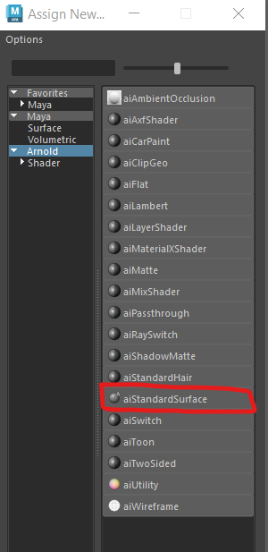
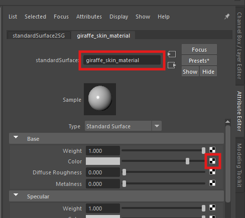
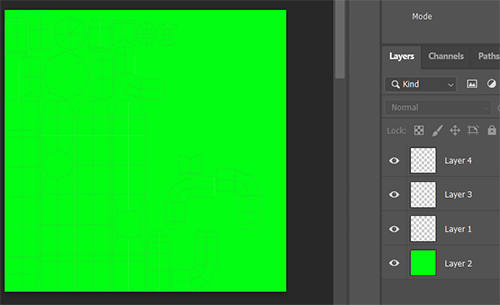

Worksheet 4 - Textures
Add colour
Create a new scene
- Open up Maya
- Create a new Scene

- Save the scene in the principles of 3d folder you created in workshop 1, or somewhere equally sensible.
Add a polygon

Add a material
- Select you cube, hold down the right mouse button and select Assign New
Material...

- Select Arnold > AiStandardSurface

The Attribute editor will now appear.
If you loose your attribute editor panel, you can get it back by first making sure your object is selected, and
then holding down the right mouse button and selecting Material Attributes

- Change the name to "cube material 1" and press enter. It is really important to name materials to avoid
confusion later on.

- Change the colour of the material by double clicking on the box next to Color

- The cube in your scene should now have the colour, if it doesn't make sure the textured
button is turned on in the viewport

- Experiment with the Roughness and Metallic sliders to see how they change
the look of the cube.

Adding an image map
- Create another cube, move it next to the first and assign a new AiStandardSurface material
just like we did above.
- This time, name it "giraffe_skin_material"
- Instead of a colour, we want to use an image.
- Download the giraffe print image
Giraffe texture
- Save it in the same folder as your scene. this is really important as the image will be loaded in each time
you open Maya.
- Click the black and white button next to Color


- Click on the folder icon and find the giraffe pattern you downloaded earlier.

- You should now see the pattern applied to your cube

Change the scale
To scale the pattern, press the image checkerboard button again
- Then the place2dTexture tab

- Then changing the Repeat UV values, it is a good idea to keep them the same to avoid stretching the texture.

Import a model
- Download the cactus fbx file
cactus fbx file
- Import the model into Maya by choosing File > import

- Move the model so it is not on top of the cubes.

Prepare the model
UV mapping should be done after you have completely finished modeling. If you make any changes to your mesh you
may need to re-map all or part of your model.
Delete history
The history keeps track of changes you make to your model but can make your outliner and uv mapping more
complicated.
- Important - If you are working on your own model, save a copy before you delete the history so
that you can go back if you need to.
- Delete the history of the cactus by selecting your model and pressing the Delete history
button.

Freeze transforms
When making your model you may have scaled some of the pieces. Before uv mapping, the scales all need to be reset
to 1. To do this select the cactus and press the Freeze transforms button.

Apply a material
- Select the cactus and apply the giraffe skin texture by right clicking and choosing Assign Existing
Material > giraffe_skin_material

You should now see the material on the cactus, but it may look distorted and stretched. This is because it has
not been UV mapped.

UV mapping
The easiest solution to this is to use automatic mapping.
- With the cactus still selected, select UV > Automatic from the top menu

This should do a reasonable job at UV mapping the cactus for you

UV Editor
- With your cactus selected, choose UV > UV Editor from the top menu

This will open up the editor allowing you to see how automatic mapping has laid out your UV's.
- You can select faces in the UV editor and see their corresponding face the perspective view

In this image you can see where the front of the cactus is.
Editing UV shells
Automatic mapping splits the surface of the model into different uv shells. It does a reasonable job, however, it
is not very smart and can splits the model into more uv shells than necessary.
If you have a seamless texture you will see joints in the texture between shells.

You cannot avoid joints entirely, however, if you manually uv map your model you have more control to hide the
joint.
- If you would like to manually map your own model, please watch my UV mapping video on Blackboard (learning
materials > Maya content > extra videos)
For this worksheet we will continue with what the automatic mapping has given us.
Create your own texture
We are now going to export the UV's and open them up in PhotoShop and create our own textures.
Create a snapshot
- In the UV editor, use the mouse to select all the uv shells by drawing a square around them.

- Now Take a snapshot of the uvs by pressing the camera icon at the top of the editor.

- Save the snapshot somewhere sensible on your machine. make sure it is set to png and the edge colour is
black.

Open the snapshot in PhotoShop
- Open PhotoShop on your machine
- Use PhotoShop to open the snapshot you just created.

Layer 1 is your snapshot.
- Create 3 new layers by clicking the plus button at the bottom right of the screen.

- Layer 2 is going to be our background, click on it to select it

- Choose a green fill colour by double clicking the little black square at the bottom left of the screen and
choosing a green colour.


Add a face
- Download one of the following face image
face image 1
face image 2
face image 3
face image 4
face image 5
- Click on layer 3 in PhotoShop to select it.
- Drag the face image file into PhotoShop and drop it in the middle of the screen
- Drag and scale it so that is in the right position on the snapshot.

- We want to hide the initial snapshot image before we export, so press the eye icon next to layer 1 to hide
it.

- Export the image by selecting File > Export > Quick Export as PNG and save it in your
principles of 3d folder. name it "cactus_with_face"
Apply the next texture to your Cactus
- Go back into Maya
- Close the UV editor panel if it is still open
- Select your cactus
- Hold down the right mouse button and select Assign new material
- Select Maya > AiStandardSurface as before
- Add the colour map you just created

Look at your applied texture
- Your finished cactus should look something like this

Extra Challenge
- Watch the manual UV mapping video on Blackboard and try to manually map the cactus and reapply the texture.
{kind=link}
{kind=link}
{kind=link}
{kind=link}
{kind=link}
{kind=link}